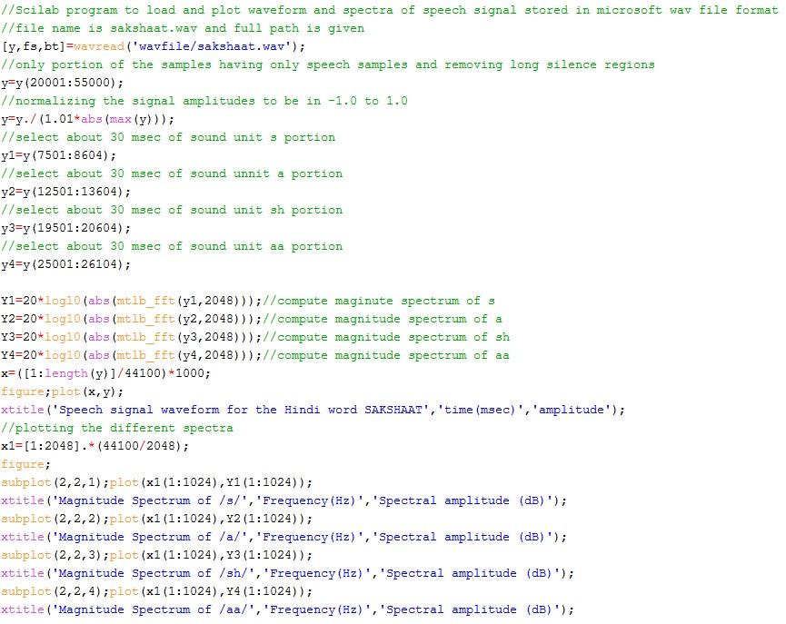
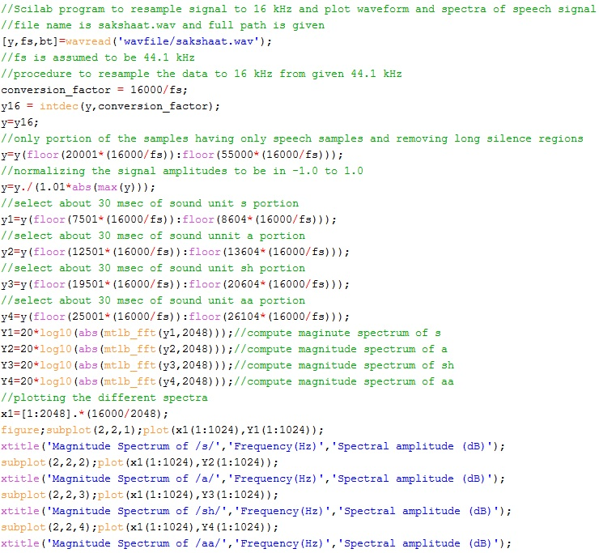
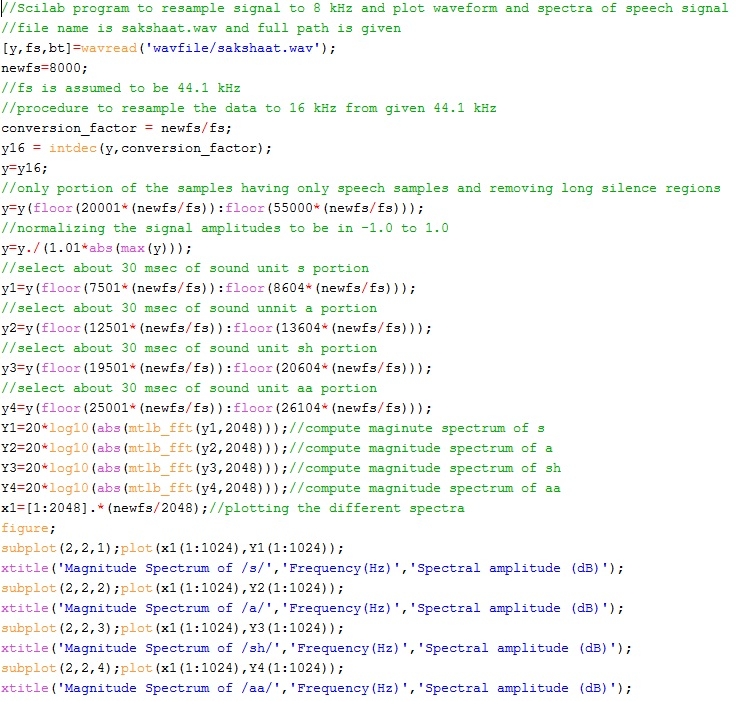
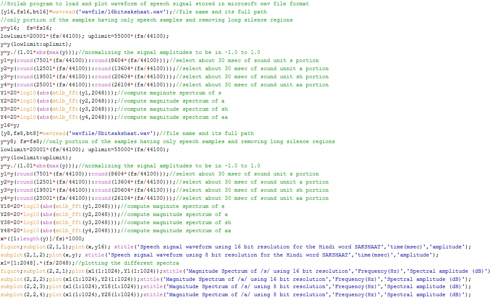
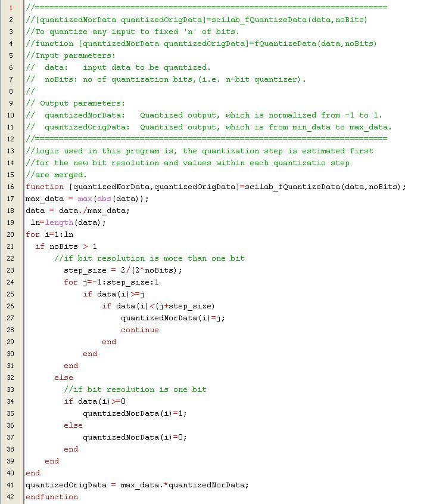

Shakshat Virtual Lab 
INDIAN INSTITUTE OF TECHNOLOGY GUWAHATI
Plotting Speech and its Spectra
The first step in studying the significance of sampling frequency and bit resolution is to record a speech signal at highest possible sampling frequency and bit resolution. For audio frequency, the standard sampling frequency is 44.1 kHz and bit resolution is 16 bits/sample. The waveform and its spectra are used as reference for the entire experiment. The waveform and spectra of selected portions can be plotted using the Scilab code given below.

Study of Sampling Frequency
To study the significance of sampling frequency, the sampling frequency of the given speech signal can be reduced at different levels and the waveform and spectra can be studied at each level. The Scilab code given below takes input speech signal sampled at 44.1 kHz and resamples it to a sampling frequency of 16 kHz and plots spectra of selected segments. It should be noted that the sample numbers given in the code are based on the input waveform chosen by us. It should be changed according to input speech signal under consideration.

On the similar lines we can further reduce the sampling frequency to 8 kHz to obtain telephone bandwidth or narrowband speech. The Scilab code for resampling the input signal at 44.1 kHz to 8 kHz and plotting spectra of selected segments is given below.

As illustrated the procedure is explained for converting the sampling frequency from 44.1 kHz to 16 kHz and 8 kHz. The choice of these two sampling frequencies is because of they are being the standard values for wideband and narrowband speech. However, the same code can be used for studying the effect of sampling frequency at any other value with minor modification to the code. In case of sampling frequency conversion, by keeping the bit resolution same, the waveforms may not show much distinction for visual perception. The change can only be observed in terms of the frequency contents as illustrated in different spectra.
Study of Bit Resolution
For studying the significance of bit resolution, the sampling frequency is kept constant at the optimal value of 16 kHz as discovered from the earlier study. The starting bit resolution used in case of speech is 16 bits/sample. A Scilab code to quantize speech data given at 16 bit resolution into data at 8 bit resolution and also plot its waveforms and spectra is as follows:

Not that the above code uses a user defined function for quantization which is given below.

On the similar lines we can further reduce the bit resolution to 4 bits and 1 bit using the above code with minor modification. Only in the quantizer function, the number bits to be changed, otherwise everything else remains same.